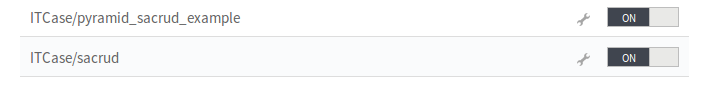
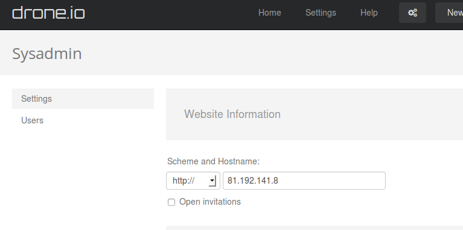
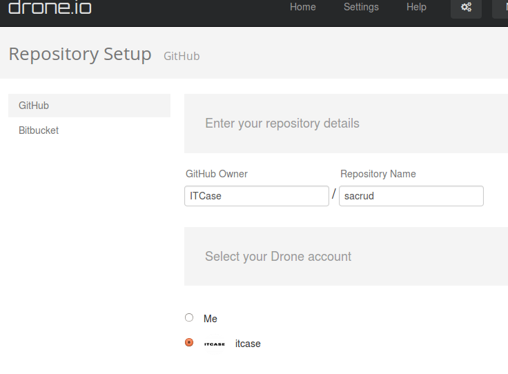
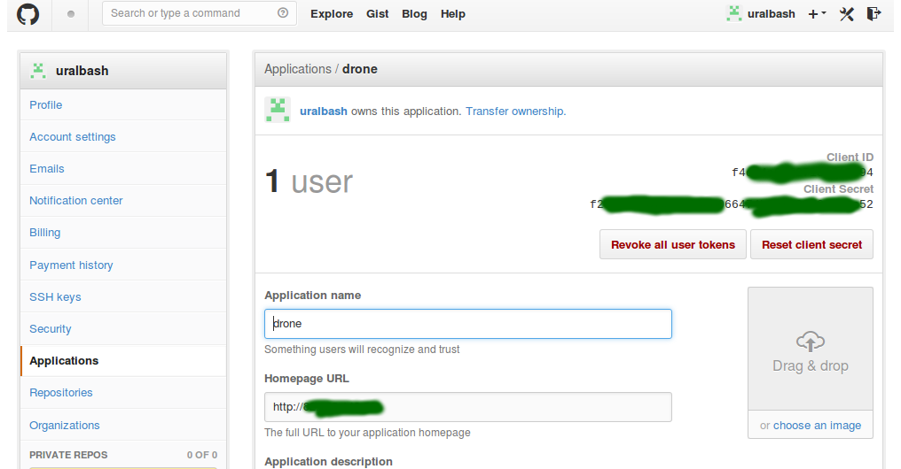
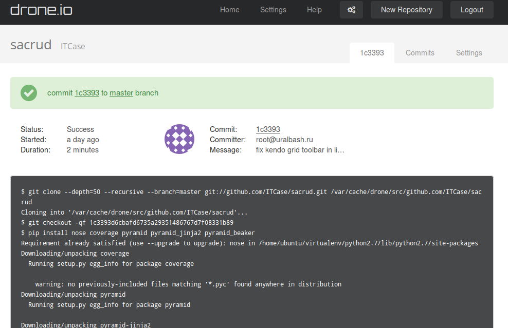

|
Apr 13, 2014
|
Идея непрерывной интеграции заключается в том, что при любом изменении проекта он пересобирается в условиях приближенных к реальной эксплуатации и каждый раз запускает тесты. Это позволяет моментально отловить баги и исправить их не отходя от кассы, пока ещё помнишь что понаписал.
Принцип работы у всех примерно один:
Это можно сделать самостоятельно, например при помощи fabric, cron,
chroot или docker или при помощи готовых CI серверов:
Облачные CI сервера:
Облачный CI отлично подойдет для OpenSource проектов, а остальное можно
тестировать на локальном сервере.
Посмотрим как это работает на примере python + pyramid приложения.
Следит за вашими репозитариями на github, выкачивает при каждом коммите, собирает окружение в индивидуальном контейнере каждый раз, имеет простой конфиг. Работает только с github, закрытые репы за деньги.
Авторизация через гитхаб аккаунт, дальше указываем что будем тестировать
Теперь положим в корень репы на гитхабе файл с настройками .travis.yml
В этом файле находятся инструкции, какое окружение нужно для вашего проекта, как его собирать, запускать тесты и куда слать уведомления.
language: python
notifications:
email: "sacrud@uralbash.ru"
email: "arkadiy@bk.ru"
python:
1. "2.7"
2. "2.6"
install:
1. pip install nose coverage coveralls
2. pip install pyramid pyramid_jinja2 pyramid_beaker
3. pip install -r requirements.txt
script:
1. nosetests --with-coverage --cover-package sacrud --cover-erase --with-doctest
after_success:
coveralls
Здесь я думаю и так все понятно. coveralls нужен для сервиса https://coveralls.io/ (про него ниже).
После каждого коммита создается задание в трависе которое заканчивается примерно таким выводом https://travis-ci.org/ITCase/sacrud/jobs/22811094
Иногда СЕОшники всё портят как здесь
https://travis-ci.org/ITCase/sacrud/jobs/22688250 т.к. не умеют запускать
тесты, но благодаря CI эти проблемы сразу обнаруживаются.
Более сложный конфиг с установкой postgres
https://github.com/ITCase/pyramid_sacrud_example/blob/master/.travis.yml
Drone похож на travis-ci но он дешевле, умеет bitbucket и исходный
код https://github.com/drone/drone. Очень удобно OpenSource в облаке,
приватные репы на локальном сервере и все это имеет одинаковый конфиг. Конфиг
.drone.yml, формат очень похож на travis.
image: python2.7
script:
1. pip install nose coverage pyramid pyramid_jinja2 pyramid_beaker
2. pip install -r requirements.txt
3. nosetests --cover-package=sacrud --cover-erase --with-coverage --with-doctest
notify:
email:
recipients:
1. sacrud@uralbash.ru
С облаком всё понятно, установим drone локально. В качестве платформы
используется VM с Ubuntu server 12.04 с одним ядром и 2Гб ОЗУ, что вполне
достаточно для небольшой команды программистов.
Т.к. drone собирает проекты в легковесных контенерах при помощи Docker вначале установим его http://docs.docker.io/en/latest/installation/ubuntulinux/#ubuntu-precise
Сам drone устанавливается очень просто через deb пакет
http://drone.readthedocs.org/en/latest/install.html, теперь он у вас висит на
80 порту или на том который вы указали. Запускается и конфигурируется через
upstart (sudo start drone, sudo stop drone). Можно проверить локально,
если перейти в репозитарий проекта с файлом .drone.yml и запустить drone
build.
Для того что бы github или bitbucket слал уведомление вашему drone серверу нужен статический IP. Пробросим порты к виртуалке на роутере :) и укажем IP в настройках:
добавим репу:
После добавления в гитхаб появится новый аппликайшин:
Client ID и Client Secret нужно указать в настройках drone. Теперь
комитим и чиним.
Для приватных реп drone автоматически прописывает RSA ключ. Его можно посмотреть в настройках репы и скопировать вручную например или поменять.
Вывод похож на travis:
Пару слов почему не другие системы. Во первых drone это и облако и локалхост,
дальше bitbucket+github, контейнеры docker из коробки, иконка-статус сборки в
Markdown, написан на Go как и Docker. Из недостатков пока мало свистелок и
перделок, первое что бросается в глаза отсутствие кнопки REBUILD (пересобрать
вручную). Но т.к. проект молодой то всё обещают запилить в следующей версии,
судя по issue на github’е.
Jenkins страшный, сложный, всё пилить руками, докера нет, написан на Java.
Buildbot написан на python, хорошая архитектура master-slave, можно запилить
slave в контейнеры, но написан на старой версии twisted и sqlalchemy аж 0.7
версии, код ужасен, инструкции из документации устаревшие, нужно додумывать,
конфиг сложный, будущего у системы нет.
StriderCD написан на nodejs, много чего есть из коробки, принцип плагинов
через npm, docker пилить самому, глючный :( хотя выглядит неплохо.
Есть ещё альтернативы типа gitlab-ci и наверняка ещё что-то, но я их не смотрел.
Coveralls отличное дополнение, в котором можно визуально отследить что ещё не покрыто тестами. Из минусов, нет bitbucket, мне показался он дороговатым для приватных реп и ещё лежит отдавая 503 на момент написания этой статьи, но локальных альтернатив я не нашёл, к сожалению.
В этом обзоре показан простой пример как можно настроить непрерывную интеграцию проекта на python и pyramid. Но по аналогии можно поднять любой другой проект. Думаю вам эта статья поможет, хотя бы начать писать тесты :)
{kind=link}
{kind=link}